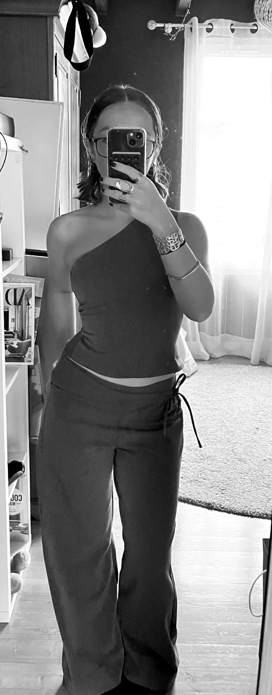
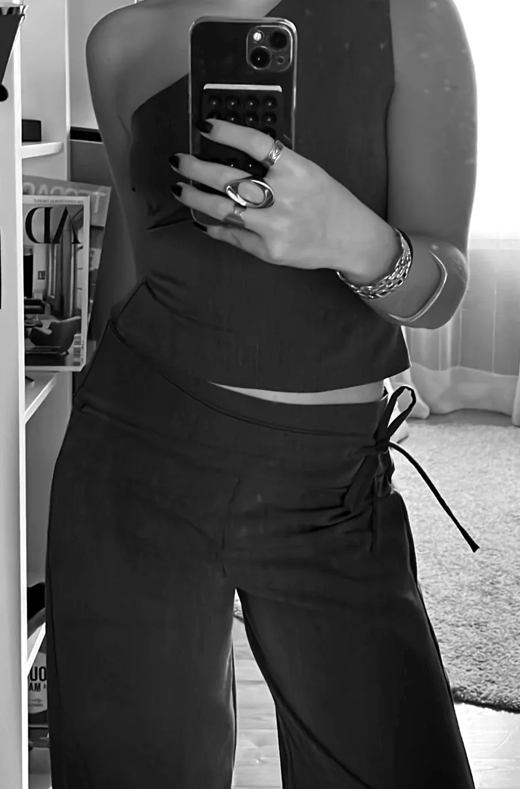
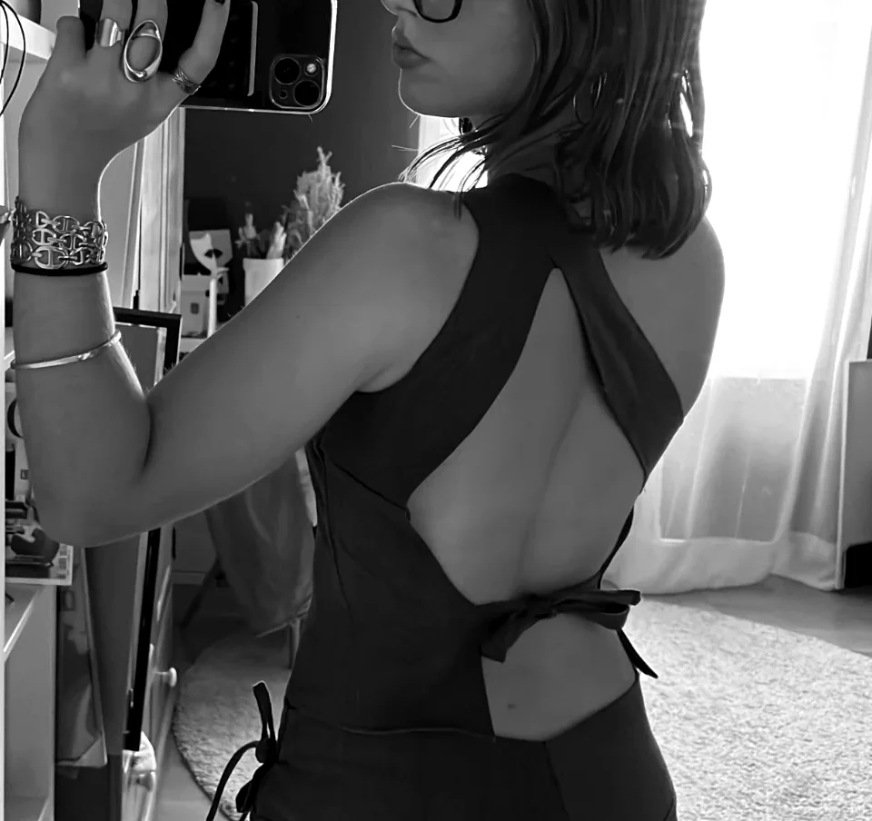
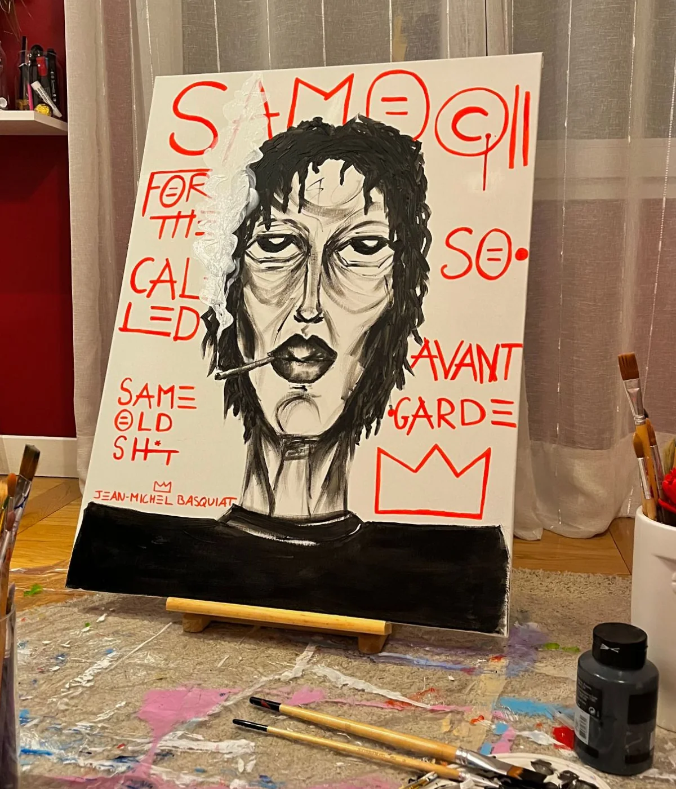
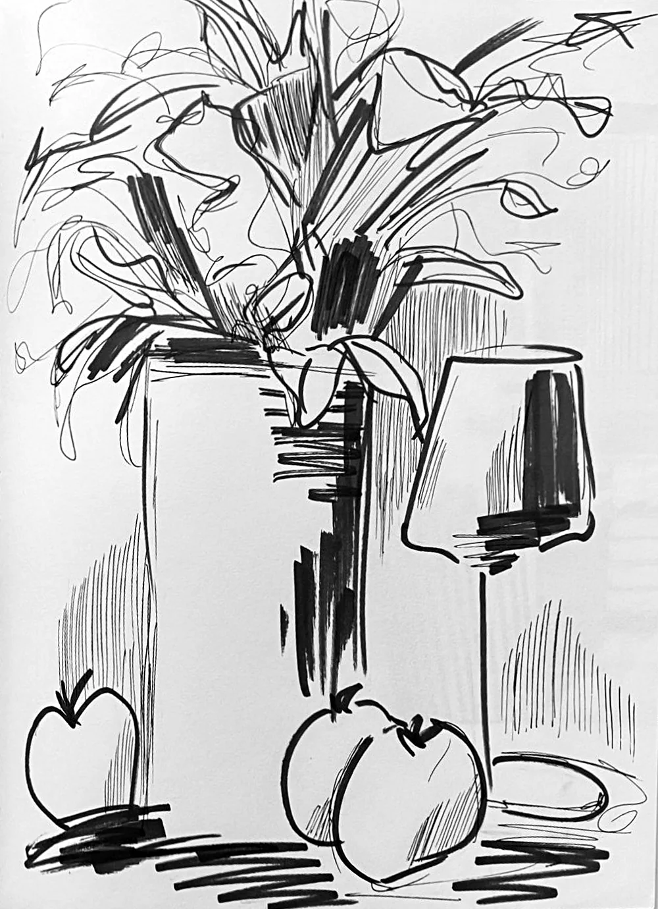

Projets divers
Série photographique
Lycée · Première · 2022« Une œuvre d’art est un coin de la création vu à travers un tempérament. »Émile Zola
Inspirée par le célèbre couple Becher et leur approche sérielle en photographie, j’ai été profondément marquée par une émotion d’oppression lors du traitement de mes propres photographies. La grandeur des immeubles semblait infinie, leur similitude frappante créant une atmosphère étouffante. J’ai choisi de présenter ces quatre clichés en noir et blanc pour intensifier cette sensation.
À la manière de Giacomo Costa, qui explore la densité urbaine à travers ses compositions d’immeubles entassés, j’ai utilisé Photoshop pour créer un collage, accentuant ainsi l’effet d’oppression où les bâtiments semblent envahir l’horizon. Dans la deuxième photographie, j’ai manipulé les perspectives afin de mettre en évidence la variété des plans sur lesquels les bâtiments s’érigent. La troisième laisse transparaître l’idée que même le ciel semble se transformer en une structure construite. Enfin, dans la dernière capture, la grandeur vertigineuse des édifices crée une sensation d’oppression, mais une mince ligne semble s’élever vers le ciel, évoquant une lueur d’espoir au milieu de ces deux masses imposantes.


Matière et texture
Licence 2 · ESA · 2026J’ai réalisé une série de trois approches différentes du site autour de la matérialité et de la texture.
La première approche s’est faite par la photographie, afin d’observer et de capter les différentes matières présentes sur le site, leurs détails, leurs variations et leur rapport à la lumière.
La deuxième approche est plus texturielle. Je suis allée sur site pour prélever des empreintes de textures, puis j’ai utilisé de l’encre pour les reporter sur papier. L’encre se déposait surtout dans les zones creuses et les vides, ce qui faisait apparaître un jeu entre le plein et le vide, entre les reliefs et les espaces en retrait.
Enfin, la troisième approche consistait à traduire ces textures en volume à travers la poterie. Cette étape permettait de passer à une lecture en 3D, plus précise et plus physique, en reconstituant les reliefs.

Couture
Projet personnelUn ensemble dessiné et cousu par mes soins : un haut asymétrique à une épaule et un pantalon large à taille basse.
Le haut s’ouvre dans le dos, retenu par un simple nœud ; le pantalon se resserre sur le côté par un lien. Comme pour une maquette, il s’agit de comprendre comment une forme tient, se construit et s’assemble — ici, autour du corps.



Peinture
Hommage à Jean-Michel BasquiatUn portrait en hommage à Jean-Michel Basquiat, peint à l’acrylique sur toile.
Le visage est travaillé en noir et blanc, par touches épaisses, tandis que les mots et la couronne de Basquiat l’encadrent en rouge vif : « SAMO© », « Same old shit », « for the so-called avant-garde ».
Un contraste entre la matière sombre du portrait et l’écriture graphique, presque architecturale, qui structure la toile.

Carnet de croquis
Dessin au feutreUne nature morte dessinée au feutre : un bouquet, un vase, une lampe et quelques fruits.
Un dessin rapide, fait de traits libres et de hachures, pour saisir les volumes, la lumière et les ombres plutôt que le détail — le même regard que pour un croquis d’architecture.
